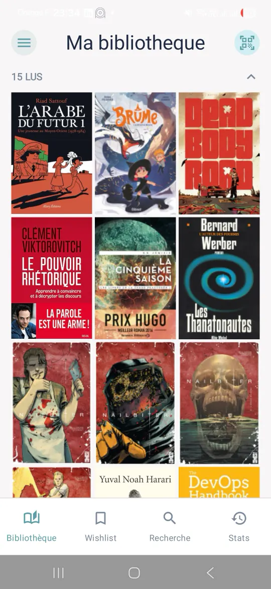
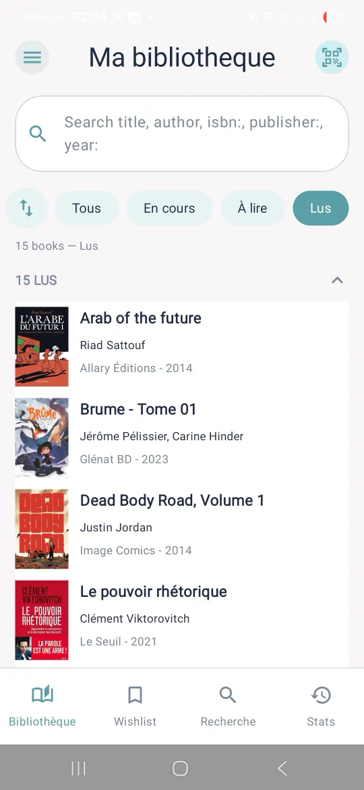
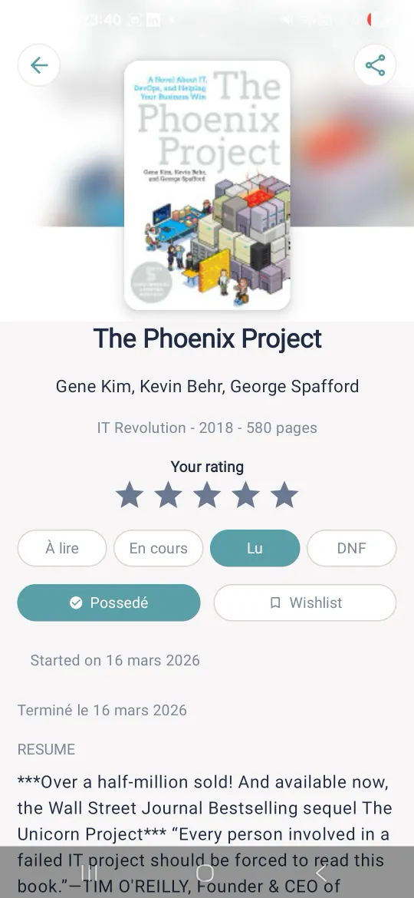

Bookfolio
Suivez vos lectures, gérez votre bibliothèque, synchronisez si vous voulez. Hors ligne d'abord.

Ce que ça change
-
Votre bibliothèque, sans compte
Elle fonctionne entièrement sur l'appareil. Aucun compte n'est nécessaire pour commencer.
-
Un livre ajouté en quelques secondes
Par titre, auteur, ISBN ou en scannant son code-barres. La fiche vient de Google Books, Open Library en repli.
-
Où vous en êtes, d'un coup d'œil
Quatre statuts : À lire, En cours, Lu, DNF. Les pages lues, et une section « En cours de lecture » pour reprendre.
-
Votre parcours de lecture
Un objectif annuel, les livres et les pages lus dans Stats, un journal de vos changements, une note sur cinq étoiles.
-
Sur vos autres appareils, si vous le voulez
La connexion Google est optionnelle : vos statuts rejoignent vos étagères Google Books, votre bibliothèque est sauvegardée dans votre Google Drive.
Comment ça marche
Vous cherchez un livre par titre, auteur ou ISBN, ou vous scannez son code-barres.
Vous lui donnez un statut : À lire, En cours, Lu, DNF. Vous notez vos pages, votre note, vos notes.
Stats montre votre objectif de l'année et votre parcours. La synchronisation Google est là si vous en voulez.
Captures d'écran
Celles de la fiche Google Play. L'interface y mêle français et anglais.


Vos données
Votre bibliothèque est enregistrée localement en premier : elle fonctionne sans compte Google. Si vous activez la synchronisation, elle est stockée dans votre propre Google Drive et vos statuts dans vos étagères Google Books. Il n'existe aucun serveur Bookfolio.
Ce qui sort de l'appareil : les termes que vous saisissez pour chercher un livre, envoyés à Google Books (et à Open Library en repli), et le téléchargement des couvertures.
Les autorisations demandées
- Caméra : scanner un code-barres, rien d'autre. Demandée seulement quand vous ouvrez le scanner. Sans caméra, la saisie de l'ISBN trouve le même livre.
- Notifications : des rappels de lecture locaux, optionnels, à couper quand vous voulez.
- Internet et état du réseau : la recherche de livres, les couvertures, la synchronisation Google.
- Achats Google Play : les pourboires et le badge supporter, dans Réglages. Rien n'est obligatoire.
- Vibration : un retour au scan.
Télémétrie
Bookfolio embarque Firebase Analytics et Crashlytics, désactivés par défaut. Ils n'envoient rien tant que vous ne les activez pas, à l'onboarding ou dans Réglages, et vous pouvez les couper à tout moment. L'identifiant publicitaire est retiré de l'application. Pas de publicité.
Questions
Faut-il un compte Google ?
Non. Votre bibliothèque est enregistrée localement en premier et fonctionne sans compte Google. Si la synchronisation Drive est désactivée, vos données restent sur cet appareil.
Que synchronise la connexion Google ?
Vos statuts de lecture rejoignent vos étagères Google Books. Vos réglages, votre progression, vos notes et votre wishlist sont enregistrés dans un dossier privé de l'application dans votre Google Drive, ce qui permet de retrouver votre bibliothèque sur un autre appareil. L'autorisation demandée à Google se limite à Google Books et à ce dossier.
Et sans caméra ?
Le scanner est un raccourci, jamais le seul chemin : la saisie de l'ISBN trouve le même livre. Une tablette ou un Chromebook sans caméra peut installer l'application.
Bookfolio suit-il mon usage ?
Seulement si vous l'activez. Firebase Analytics et Crashlytics sont désactivés par défaut ; les événements envoyés, si vous les activez, ne contiennent ni donnée personnelle ni contenu de vos livres.
Où est la wishlist ?
Elle est désactivée par défaut. Activez « Fonction Wishlist » dans Réglages : les livres que vous marquez y apparaissent, et un rappel wishlist optionnel existe.